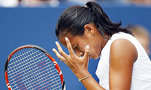
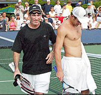

← Bài trước: Reducing Stress | 🏠 Mental Game Trang chủ | Bài tiếp: → Resistance Points and Breakthrough Points
Thay thế tự tin bằng kỷ luật cảm xúc
Thư viện kiến thức quần vợt thống nhất — Cơ bản, Phân tích kỹ thuật, Thư viện tham khảo, và nhiều hơn nữa
Thay thế tự tin bằng kỷ luật cảm xúc
Bởi Allen Fox, Ph.D.

Tự tin là chìa khóa để đạt được tiềm năng của bạn.
Trong bài viết trước, chúng ta đã xem xét một số cách để tăng cường tự tin (Nhấn vào đây). Tăng cường tự tin theo thời gian nên là một phần trong việc phát triển tiềm năng của bạn như một tay vợt quần vợt. Ý tưởng là thay đổi cách bạn cảm nhận về trò chơi của mình và tạo ra nhiều tự tin hơn khi bạn đang trên sân. (Nhấn vào đây.)
Nhưng trong bài viết này, tôi muốn đề xuất một phương pháp khác để giành chiến thắng trong các trận đấu khi tự tin của bạn giảm xuống. Đây là thay thế tự tin bằng kỷ luật cảm xúc. Làm điều này thường cho phép bạn đạt được những gì bạn có thể đạt được nếu bạn thực sự tự tin, chỉ là theo một cách khác.
Có những lúc trong sự nghiệp của mỗi tay vợt khi anh ta có ít hoặc thậm chí rất ít tự tin hơn khi anh ta ở đỉnh cao. Ngoài ra, còn có xu hướng tự nhiên là khi một tay vợt thiếu tự tin, anh ta trở nên quá cảm xúc trong cuộc thi đấu.
Sợ hãi và những bất định lan rộng và tay vợt đặc biệt dễ bị choking, tức giận, thất vọng, hoặc làm ra những lời biện hộ. Khi điều này xảy ra, tất nhiên, chu trình chơi kém sẽ được duy trì.
Khi một tay vợt ở trong tư duy này, những phản ứng tiêu cực này có thể được giảm bớt một cách có ý thức với kỷ luật cao hơn bình thường. Phương pháp này có thể cho phép tay vợt vẫn giữ được khả năng cạnh tranh và tránh phá hủy hoàn toàn bản thân mình khi họ đang chơi kém. Kết quả thì lại có thể là một trận thắng hoặc một loạt trận thắng giúp tự tin chảy theo hướng đúng lại.
Làm thế nào để bạn kỷ luật chơi của mình? Hãy chơi một cách nhất quán và bảo thủ hơn so với khi bạn ở đỉnh cao. Đừng có ý định sáng tạo với lựa chọn cú đánh của mình.

Làm thế nào để bạn thoát khỏi tư duy tiêu cực?
Hãy đánh nhiều đường chéo sân và cố gắng ít thắng hơn đường xuống sân. Hãy quyết tâm làm việc chăm chỉ hơn và sẵn lòng chạy nhiều hơn bình thường. Hãy cố gắng hơn bạn bình thường.
Tất cả điều này đòi hỏi rất nhiều nỗ lực tinh thần. Bạn không thể thư giãn sự tập trung của mình ngay cả trong một khoảnh khắc. Nhưng bạn có thể làm được nếu bạn đủ quyết tâm.
Để giành được trận thắng đầu tiên bằng cách này có thể cần một số sự giúp đỡ từ đối thủ của bạn dưới dạng một số lỗi bổ sung. Nhưng thực tế là tập trung chăm chỉ và buộc đối thủ phải ở trên sân lâu hơn thường tạo ra kết quả này.
Điểm cuối cùng là kỷ luật bản thân mình để chơi theo cách này bất kể bạn thực sự cảm thấy như thế nào tăng cơ hội bạn giành được trận thắng hoặc những trận thắng bạn cần để đảo ngược chu trình thua. Thật thú vị là điều này có thể dẫn đến sự phục hồi của tự tin mà bạn đã mất trước đó.

Kỷ luật bản thân có thể tạo ra kết quả bất kể bạn thực sự cảm thấy như thế nào bên trong.
Thay đổi huấn luyện viên
Thay đổi huấn luyện viên cũng có thể phá vỡ chu trình tự tin giảm. Một huấn luyện viên mới thường tự động tăng cường tự tin của một tay vợt. Điều này đúng bất kể huấn luyện viên mới thực sự tốt hơn huấn luyện viên mà anh ta thay thế hay không.
Mỗi huấn luyện viên chỉ có một lượng thông tin nhất định. Một khi một huấn luyện viên đã làm việc với một tay vợt trong một thời gian hợp lý, tay vợt sẽ đã học được hầu hết những gì huấn luyện viên có thể cung cấp.
Điều này có thể trở nên mệt mỏi và lặp đi lặp lại. Trong những trường hợp này, thông tin mới đến từ một góc độ mới có thể hữu ích.
Bằng cách tương tự hoặc thậm chí quan trọng hơn là thực tế là giọng nói mới có thể có tác động tâm lý tích cực. Một huấn luyện viên mới có thể dẫn một tay vợt đang gặp khó khăn tin rằng có một chút "ma thuật" lời khuyên trong tương lai có thể phá vỡ chu trình tiêu cực. Sự tin rằng thông tin mới này có thể giúp đỡ hoạt động một cách nào đó giống như hiệu ứng placebo.
Dumbo và chiếc lông ma thuật
Tôi so sánh nó với câu chuyện về Dumbo và chiếc lông ma thuật. Con chuột đưa chiếc lông cho Dumbo và nói với anh ta rằng nó là ma thuật, và bất cứ khi nào anh ta cầm nó trong cái niêm mạc của mình anh ta sẽ có thể bay. Vì vậy Dumbo vỗ cánh tay lớn của mình và, tin vào sức mạnh ma thuật của chiếc lông, anh ta thực sự bay.

Một huấn luyện viên mới có thể giúp bạn bay với chiếc lông ma thuật.
Khi bay Dumbo thả chiếc lông, bắt đầu rơi, và con chuột (ngồi trên mũ của mình) nói với anh ta rằng chiếc lông không có thực sự sức mạnh ma thuật và Dumbo đã có thể bay từ lâu. Và vậy Dumbo bay mà không có chiếc lông.
Trên tour chuyên nghiệp, một huấn luyện viên mới có thể, ngoài việc cung cấp thông tin kỹ thuật mới, ban đầu đóng vai trò như một chiếc lông ma thuật cho một tay vợt bị kẹt. Không giống như Dumbo, khi tay vợt tìm ra rằng huấn luyện viên không có ma thuật anh ta có thể không tiếp tục bay. Thay vào đó, anh ta có thể tìm kiếm một huấn luyện viên mới, đặc biệt là nếu anh ta đã hấp thụ hầu hết thông tin mà huấn luyện viên mới của anh ta có thể cung cấp.
Brad Gilbert đã tăng cường sự nghiệp của cả Andre Agassi (đang gặp khó khăn) và Andy Roddick (chưa đến) đến mức cả hai đều giành được danh hiệu Slam ngay sau khi anh ta bắt đầu huấn luyện họ.
Một phần lý do là Gilbert là một thiên tài chiến lược, nhưng quan trọng hơn hoặc thậm chí quan trọng hơn là anh ta đã cung cấp cho tay vợt của mình hy vọng và động lực mới. Không chỉ là họ đang nghe một giọng nói mới và thông tin kỹ thuật mới, mà Gilbert cũng đóng vai trò như một "chiếc lông ma thuật" ban đầu.


Với Brad Gilbert, Agassi và Roddick đều giành được một Slam rất nhanh chóng.
Anh ta cung cấp các công cụ hiệu quả. Nhưng đối với Agassi và Roddick, biết rằng họ đang trong tay của một thiên tài chiến lược được biết đến rộng rãi là người thông minh nhất trong thời gian gần đây đã tăng cường tự tin của họ, và cuối cùng, trong chính bản thân họ. Vì các phương pháp của Brad hoạt động, cả hai tay vợt đã giành được những trận thắng ban đầu họ cần để tăng cường tự tin, và quá trình tiếp tục từ đó. Nhưng như thường lệ, theo thời gian, một số ma thuật cuối cùng cũng đã tan biến.
Đã hấp thụ hầu hết sự khôn ngoan của Gilbert, cả hai tay vợt cuối cùng đã rời anh ta để tìm các huấn luyện viên khác. (Họ chia tay với sự tôn trọng lẫn nhau rất tốt, như là phải có với tất cả những người tốt.)

Thời gian có thể là điều trị khi bạn cảm thấy như vậy.
Thời gian
Một giải pháp khác cho sự mất tự tin có thể đơn giản là thời gian. Thời gian có thể là điều trị.
Thời gian có thể đôi khi giúp bạn thoát khỏi một chuỗi thua. Điều này là vì sự giảm tự tin do một trận thua tự nhiên tan biến theo thời gian.
Vì lý do này, nếu một người đang gặp khó khăn nghiêm trọng, có thể hữu ích là tạm ngừng thi đấu. Bạn có thể, trong một tuần hoặc hai tuần, ngừng chơi quần vợt hoàn toàn hoặc chỉ đánh và làm việc trên các cú đánh của mình.
Khi bạn quay lại thi đấu, hãy bắt đầu với những đối thủ yếu hơn, một chiến thuật mà tôi đã đề xuất trước đây. (Nhấn vào đây.) Như vậy bạn có thể dần xây dựng lại tự tin của mình như một tiền đề để đối đầu với những đối thủ khó khăn hơn của mình.
Trong dài hạn, không có thuốc thần nào để biến đổi bạn như một tay vợt hoặc một người. Cuối cùng, tự tin phải đến từ kinh nghiệm của bạn trên sân, và cách bạn kiểm soát bản thân, và cách bạn phản ứng với những gì xảy ra.
Bạn sẽ không phát triển tự tin lâu dài từ một vợt mới hoặc một bộ dây dưa khác. Bạn phát triển nó từ việc học về bản thân mình và làm việc để phát triển các đặc điểm nội tâm của mình như một tay vợt.
Đọc thêm từ Allen!
Hãy ghé thăm anh ta tại www.allenfoxtennis.net

Thắng trận đấu tinh thần Giáo sư Allen Fox
Quần vợt là môn thể thao khó nhất về mặt tinh thần do bản chất cá nhân của nó khiến thắng và thua cảm thấy quan trọng hơn chúng thực sự là. Trong cuốn sách mới này, Allen đưa ra các giải pháp đã được chứng minh của mình đối với các vấn đề như choking, giảm căng thẳng, kết thúc trận đấu, và phát triển tự tin. Dựa trên sự nghiệp chơi và huấn luyện thành công suốt đời, đây là một cuốn sách bắt buộc cho tất cả các tay vợt cạnh tranh.
Nhấn vào đây để Đặt hàng.

Thắng có thể không phải là mọi thứ, nhưng Giáo sư Allen Fox chỉ ra rằng, nếu chúng ta trung thực với bản thân mình, thắng vẫn là điều đáng ưa thích hơn thua. Trong cuốn sách mới của mình, The Winner's Mind, Allen trình bày một kế hoạch bước theo bước đã được chứng minh để thành công trong bất kỳ nỗ lực nào của cuộc sống, dựa trên quan sát cá nhân và rất cá nhân của anh ta về sự nghiệp của cả các tay vợt quần vợt thế giới và doanh nhân thành công.
Điểm cuối cùng là rằng ngay cả khi bạn không phải là một nhà vô địch sinh ra - và chỉ một phần trăm nhỏ chúng ta là - bạn vẫn có thể sử dụng các chiến lược thành công của nhà vô địch để nghiêng cân đối trong lợi thế của bạn. Viết với sự trung thực và hài hước khắc nghiệt, Fox trình bày các đặc điểm tinh thần chung của người chiến thắng trong thể thao và trong cuộc sống. Anh ta giải thích vai trò quan trọng của trí tuệ hơn là cảm xúc. Anh ta phân tích cuộc đấu tranh giữa tham vọng và sợ hãi và nỗi sợ hãi xâm nhập và phổ biến thất bại mà làm suy yếu rất nhiều người.
Anh ta sau đó nêu cách đối mặt và vượt qua những nỗi sợ hãi này trong cuộc sống và sự nghiệp của bạn, ngay cả khi chúng ban đầu là vô thức. Phải đọc từ một trong những người nghĩ về quần vợt vĩ đại nhất, và một người Phục hưng trong cuộc sống. Nhấn vào đây để Đặt hàng.
Để mua cuốn sách này, bạn cũng có thể gửi một séc trị giá $17.95 cho Allen Fox, 1120 Inverness Place, San Luis Obispo, CA. 93401. Giá bao gồm phí vận chuyển.

Giáo sư Allen Fox là một tay vợt chuyên nghiệp thế giới, một huấn luyện viên, một tâm lý học, và một trong những nhà phân tích ban đầu và sâu sắc nhất trong quần vợt hiện đại. Một tay vợt hàng đầu 10 người Mỹ từ những ngày vinh quang trước quần vợt mở, Fox đã chơi nhiều người vĩ đại nhất, bao gồm Roy Emerson, Rod Laver, Stan Smith, và Arthur Ashe. Tại Pepperdine, anh ta đã phát triển chương trình quần vợt nam thành một đối thủ hàng đầu cho các danh hiệu quốc gia, và đã cho Brad Gilbert những thông tin quan trọng đã trở thành cơ sở cho "Winning Ugly". Cuốn sách Think to Win của anh ta là một hiện tượng văn học hiện đại. Anh ta cũng đã xuất hiện trong một loạt các video được ca ngợi, bao gồm Pro Secrets of Match Play và Allen Fox's Ultimate Tennis Lesson.
Nguồn: tennisplayer.net lưu trữ — Replacing Confidence with Emotional Discipline.docx (Thư viện giảng dạy của John Yandell, 2002-2022). Đã được trích xuất và hiển thị dưới dạng HTML cho Tennis Future Lab.